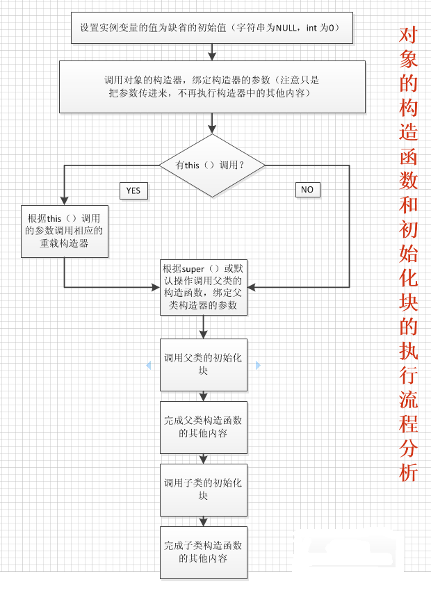

在Java中,有两种初始化块:静态初始化块和非静态初始化块。它们都是定义在类中，用大括号{}括起来，静态代码块在大括号外还要加上static关键字。
非静态初始化块：
作用：给对象进行初始化。对象一建立就运行，且优先于构造函数的运行。
与构造函数的区别：非静态初始化块给所有对象进行统一初始化，构造函数只给对应对象初始化。
应用：将所有构造函数共性的东西定义在构造代码块中。
静态初始化块：
作用：给类进行初始化。随着类的加载而执行，且只执行一次
1）构造代码块用于初始化对象，每创建一个对象就会被执行一次；静态代码块用于初始化类，随着类的加载而执行，不管创建几个对象，都只执行一次。
2）静态代码块优先于构造代码块的执行
3）都定义在类中，一个带static关键字，一个不带static
4）静态代码块里面的变量都是局部变量，只在本块内有效。
静态代码块是自动执行的; 静态方法是被调用的时候才执行的.
作用:静态代码块可用来初始化一些项目最常用的变量或对象;静态方法可用作不创建对象也可能需要执行的代码.
有两种情况要定义为静态的：一种情形是只想用一个存储区域来保存一个特定的数据——无论要创建多少个对象，甚至根本不创建对象。另一种情形是我们需要一个特殊的方法，它没有与这个类的任何对象关联。
构造函数、非静态初始化块、静态代码块都是用于初始化，三者的执行顺序依次是：静态代码块>构造代码块>构造函数。
其实初始化块就是构造器的补充，初始化块是不能接收任何参数的，定义的一些所有对象共有的属性、方法等内容时就可以用初始化块初始化了。
静态初始化块的作用就是当JVM在装载类时，你想让它做一些事情，那么，就可以用静态初始化块。这几者的执行顺序是：
（JVM在装载类时）先装载类的静态成员，再执行静态初始化块（同样，当一个类有继承自某类时，则会先装载该父类，那么，父类的装载或执行顺序，也都如句子所述）。
（在创建类的实例时）先执行实例初始化块，再执行构造方法；但对于一棵继承树中，会先调用父类的构造方法，那么其执行顺序也如此。
public class Test {
public static void main(String[] args) {
TestStatic ts1 = new TestStatic();
ts1.test();
System. out.println( "-------------------");
TestStatic ts2 = new TestStatic();
ts2.test();
System. out.println( "-------------------");
ts2.test();
}
}
class TestStatic{
public TestStatic(){
System. out.println( "构造方法执行" );
}
{
System. out.println( "代码块执行" );
}
static {
System. out.println( "非静态代码块执行" );
}
public void test(){
System. out.println( "test方法执行");
}
}
打印结果为：非静态代码块执行
代码块执行
构造方法执行
test方法执行
-------------------
代码块执行
构造方法执行
test方法执行
-------------------
test方法执行
